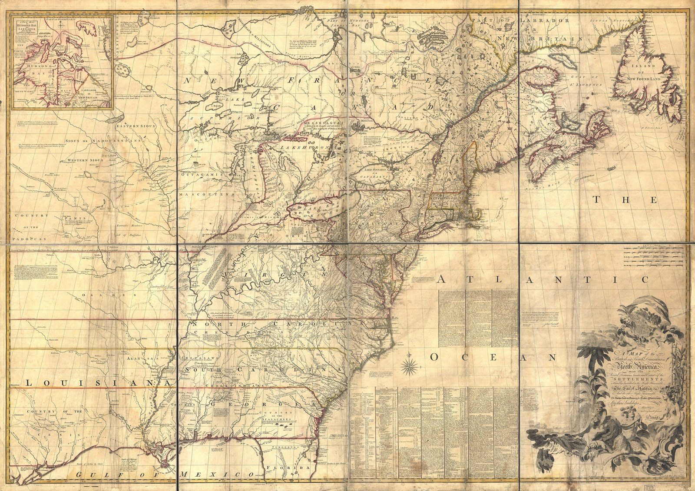
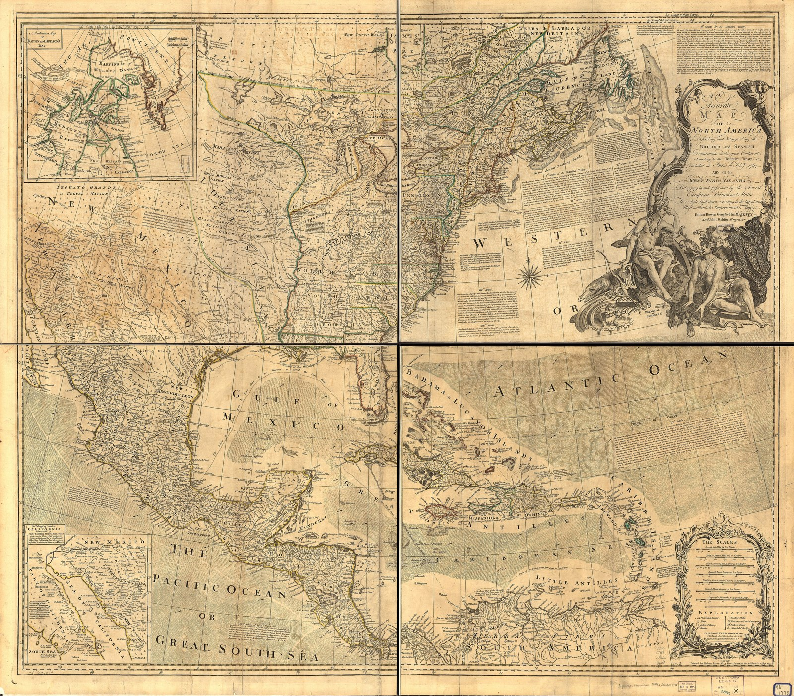

Directions: The five stations below are the record of the French and Indian War, from Franklin's cartoon of May 1754 to the Proclamation of October 1763. Study each station and answer its questions. At every station, state what its maker wanted and what it cost. In Part 2, judge the year 1763 itself.
Source: Benjamin Franklin (attributed), Join, or Die, Pennsylvania Gazette, May 9, 1754 (Library of Congress; image described), as carried in the audited TPSP bank record. The record's visual description is quoted below.
A woodcut of a snake cut into eight segments, each labeled with the initials of a colony or region: S.C., N.C., V., M., P., N.J., N.Y., and N.E. Beneath the snake is a bold caption urging the colonies to unite.
Transcript: "JOIN, or DIE." Segment labels: "S.C." "N.C." "V." "M." "P." "N.J." "N.Y." "N.E."

The snake has eight segments, and there were thirteen colonies. Which colonies and regions did Franklin name, and which did he leave out? What does the cut itself claim about the colonies as they stood in May 1754, and what does the caption predict for any segment that stays separate? State what Franklin wanted, in the month before the Albany Congress met.
Source: George Washington, The Journal of Major George Washington, published at Williamsburg in 1754, as transcribed by Founders Online, National Archives. The passage is Washington's account of his November 1753 journey to deliver Governor Dinwiddie's letter to the French commandant. Spelling follows the edition.
"As I got down before the Canoe, I spent some Time in viewing the Rivers, & the Land in the Fork, which I think extreamly well situated for a Fort; as it has the absolute Command of both Rivers. The Land at the Point is 20 or 25 Feet above the common Surface of the Water; & a considerable Bottom of flat well timber'd Land all around it, very convenient for Building."
Seven months after this journey, Washington ambushed a French party, lost Fort Necessity, and signed a capitulation in French he could not read, in which Jumonville's death was described as an assassination.
Washington was sent to deliver a letter, yet his journal reads the ground like an engineer choosing a fort site. What did he want the Forks for, and what did the French building there already know about the same ground? Then weigh the cost: what did this twenty two year old's expedition give Virginia, and what did the capitulation he signed give France?
Source: The Albany Plan of Union, 1754, as transcribed by the Avalon Project at Yale Law School, from Documents Illustrative of the Formation of the Union of the American States, Government Printing Office, 1927. Cuts are marked with ellipses.
"It is proposed that humble application be made for an act of Parliament of Great Britain, by virtue of which one general government may be formed in America, including all the said colonies, within and under which government each colony may retain its present constitution ..."
"1. That the said general government be administered by a President-General, to be appointed and supported by the crown; and a Grand Council, to be chosen by the representatives of the people of the several Colonies met in their respective assemblies. ..."
"10. That the President-General, with the advice of the Grand Council, hold or direct all Indian treaties, in which the general interest of the Colonies may be concerned; and make peace or declare war with Indian nations. ..."
"15. That they raise and pay soldiers and build forts for the defence of any of the Colonies ... 16. That for these purposes they have power to make laws, and lay and levy such general duties, imposts, or taxes, as to them shall appear most equal and just ..."
List the powers the plan hands to the general government, and name who appoints its head and who chooses its council. The Albany Congress adopted this plan and every assembly rejected it. From the plan's own terms, state what each assembly was being asked to give up, and judge whether the rejection was shortsightedness or a defense of something real.
Source: Teaching summary, written for this lesson from the historical record. This station is a summary, not a quotation, and it is labeled as one so that no words are put in any speaker's mouth.
When British officers took over the French forts after 1760, they changed the terms the Ohio and Great Lakes nations had lived by. General Jeffrey Amherst ended the practice of giving presents, which in the diplomacy of the interior sealed alliances and carried respect, and he restricted the sale of gunpowder and shot. British goods cost more than French goods had, and credit the French had extended was refused. Settlers crossed the mountains in growing numbers. The nations had not been consulted at Paris, and the treaty gave their country away on paper. In the spring of 1763, nations of the Great Lakes and Ohio Valley rose together under leaders including the Ottawa chief Pontiac. Within weeks they had taken most of the British forts in the interior and besieged Detroit and Fort Pitt. Their purpose, stated in their councils and carried in their wampum belts, was to drive the British from their country or force them back onto the French terms of trade, gifts, and respect for Indigenous land.

Name three British changes after 1760 that the summary gives as reasons for the rising, and state the nations' purpose in their own terms as the summary reports it. Why did the French defeat, a victory for their former trading partners' enemies, make the nations' position worse rather than better? What did the rising cost Britain, in forts and in the policy London issued that October?
Source: The Royal Proclamation, October 7, 1763, as transcribed by the Avalon Project at Yale Law School. Cuts are marked with ellipses.
"And whereas it is just and reasonable, and essential to our Interest, and the Security of our Colonies, that the several Nations or Tribes of Indians with whom We are connected, and who live under our Protection, should not be molested or disturbed in the Possession of such Parts of Our Dominions and Territories as, not having been ceded to or purchased by Us, are reserved to them, or any of them, as their Hunting Grounds. ..."
"And We do hereby strictly forbid, on Pain of our Displeasure, all our loving Subjects from making any Purchases or Settlements whatever, or taking Possession of any of the Lands above reserved, without our especial leave and Licence for that Purpose first obtained."
"And We do further strictly enjoin and require all Persons whatever who have either wilfully or inadvertently seated themselves upon any Lands within the Countries above described ... forthwith to remove themselves from such Settlements."

State the line the proclamation draws and the three orders it gives: to governors, to subjects, and to settlers already west of the line. London issued it in the same year the nations rose. From the document's own words, state what London says it is protecting, and then state what a Virginia veteran or speculator, promised western land for his service, would say the line cost him.
The unit closes in 1763. The five stations, with the reading, are the evidence for your judgment of that year. Sort first, then judge.
The sorting. Enter each station number under what its maker wanted and what it cost, in one line each, with one quoted phrase or named fact from the station as the evidence. Station 4 is a labeled summary; cite its facts, not quotation marks.
Your verdict. Was 1763 a triumph, a warning, or both? State your judgment in the first two sentences, then support it from at least three stations, citing stations by number. Your verdict must account for all three peoples who paid for the victory: Britain, the colonies, and the Ohio and Great Lakes nations.
The strongest counterclaim. State the strongest case against your verdict, at full strength, from the documents. Then answer it: what does your verdict explain that the counterclaim cannot?
The segments, the claim, and what Franklin wanted. The eight segments are S.C., N.C., V., M., P., N.J., N.Y., and N.E. (South Carolina, North Carolina, Virginia, Maryland, Pennsylvania, New Jersey, New York, and New England counted as one). Left out are Georgia, Delaware, and the separate New England colonies inside the N.E. segment, because Franklin aimed the cartoon at the colonies he judged reachable and necessary for a common defense. The cut itself claims that the colonies in their divided state are already dead or dying: a snake in pieces cannot live. The caption predicts that separation is death and union the only life. Franklin wanted colonial union for the war with France, on the eve of the Albany Congress in May 1754. Cost stated plainly: the appeal failed at its first job, since the assemblies rejected the union it advertised, and the snake had to be revived a decade later against Britain itself.
The engineer's eye, and the two costs. Washington wanted the Forks as a fort site: his journal says the land is extreamly well situated for a Fort, with the absolute Command of both Rivers, ground twenty or twenty five feet above the water with building land around it. The French, already building at the Forks, knew the same fact; whoever held the point commanded the Ohio. The expedition gave Virginia a published survey of the contested country and a claim staked in print. The capitulation gave France a propaganda instrument: a surrender document, signed by Washington, describing Jumonville's death as an assassination, circulated in Europe as a British admission. Credit answers that hold both.
The powers, and the rejection judged. The plan hands the general government Indian treaties, peace and war with Indigenous nations, purchases of Indigenous land, new settlements, raising and paying soldiers, building forts, and laying general duties, imposts, or taxes. Its head, the President-General, is appointed and supported by the Crown; its Grand Council is chosen by the assemblies. Each assembly was asked to give up its separate control of defense, of Indigenous relations, and above all of taxation for common purposes, the power of the purse that Lesson 7 showed the assemblies guarding. Strong answers judge the rejection as both shortsighted and real: the colonies would pay for disunion in Braddock's defeat and two years of frontier war, and the taxing power the assemblies refused to share with a colonial union in 1754 is the same power they would refuse Parliament a decade later.
The reasons, the purpose, and the cost to Britain. Any three British changes after 1760: Amherst ended the giving of presents that sealed alliances; gunpowder and shot sales were restricted; British goods cost more than French goods and credit was refused; settlers crossed the mountains in growing numbers; and the nations' country was transferred at Paris without their consent. The nations' purpose, in the terms the summary reports from their councils and wampum belts, was to drive the British from their country or force a return to the French terms of trade, gifts, and respect for Indigenous land. The French defeat made their position worse because it removed the counterweight: with France gone there was no second empire to court them, supply them, or restrain British officers. The rising cost Britain most of its interior forts within weeks, sieges at Detroit and Fort Pitt, and the policy reversal written in October as the Proclamation line.
The line, the three orders, and the two readings. The line runs along the sources of the rivers that fall into the Atlantic, the crest of the Appalachians in practice, and west of it the land is reserved to the Indigenous nations as their hunting grounds. The three orders: governors are forbidden to grant warrants or patents for lands beyond the bounds or on reserved lands; all subjects are strictly forbidden, on pain of the king's displeasure, to make purchases or settlements or take possession of reserved lands without especial leave and licence; and persons already seated on reserved lands must forthwith remove themselves. In its own words London is protecting Indigenous peoples in the possession of lands not ceded or purchased, against the great frauds and abuses it names as a cause of discontent, and it calls this just and reasonable and essential to its interest and the security of its colonies. The Virginia veteran or speculator's counter reading: he had served or invested on the expectation that victory would open the Ohio country, and the line converted his wages and his paper grants into a trespass, which is why the proclamation entered colonial politics as a grievance from the year it was issued.
Full credit should be awarded if the verdict:
Teacher note on the verdicts. The most common failure is a verdict about Britain and the colonies only, in which the Ohio and Great Lakes nations appear as scenery. Station 4 exists to prevent that reading: the nations rose for reasons of their own, and any verdict that cannot name those reasons has not used the file. The second failure is quoting Station 4 as if it were a period text; it is labeled a teaching summary on its face, and students should cite its facts accordingly.